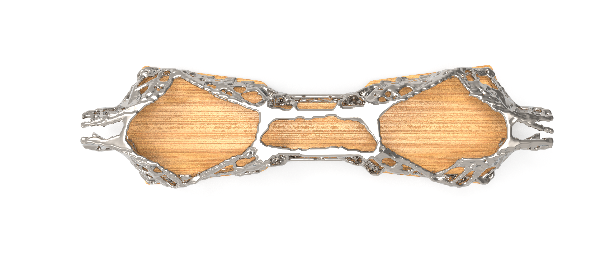

eSk8
01/2021topology optimization
This is a frame design concept for an electric skateboard that has been topology optimized to reduce weight and improve stiffness while offering enough space internally to house the electrical components and battery. The plugin used was t0pos. Inputs to the model are: applied forces, bearings and raw build volume. The concept behind this is FEM analysis and material removal where the stress is least. Results are noticeably different depending on voxel size/resolution of the system, offering different design approaches to different problems.
